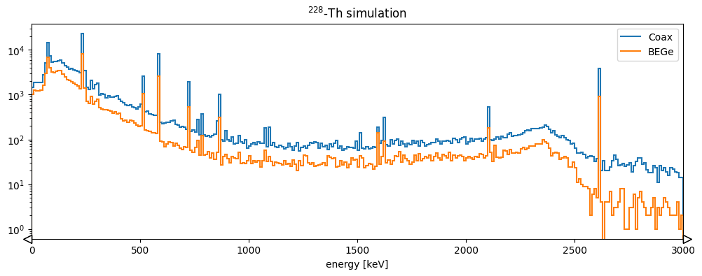

Full post-processing chain with config files¶
The previous tutorial showed how to perform a basic post-processing with a Python script using reboost tools. This is effective for small files, however it has some limitations.
need to constantly modify source code,
memory issues for large files,
no handling of parameters changing for different detectors.
An alternative approach to handle this is to use configuration files. This is
very similar to how the pygama and dspeed data processing software works.
For example see the dspeed tutorial.
The processing from a config file follows all the same steps as from the
previous tutorial. However, it is generalised to allow larger scale processing.
This tutorial describes only the hit tier processing (i.e. extraction of
information relating to a single detector channel). Building "events", which
combine information from multiple detectors, is handled in the next tutorial.
We will process the same data as last time, but for both germanium detectors and also the liquid argon table!
Setup the environment¶
from matplotlib import pyplot as plt
from lgdo import lh5
import hist
import dbetto
import colorlog
import logging
import json
from reboost.build_hit import build_hit
# setup logging
handler = colorlog.StreamHandler()
handler.setFormatter(
colorlog.ColoredFormatter("%(log_color)s%(name)s [%(levelname)s] %(message)s")
)
logger = logging.getLogger()
logger.handlers.clear()
logger.addHandler(handler)
logger.setLevel(logging.INFO)
The config file¶
We are now almost ready to start our post-processing. However, we need some configuration files to describe the post-processing we want to perform.
In principle, only a single file is needed manual. However, the generalised approach of the reboost processing means other files can be used, for example to supply parameters. There is also the possibility to supply some additional arguments, this is split from the main configuration file since it is intended for parameters changing more often. For example the path to the inputs on a given system.
The config file can be supplied as a YAML, JSON file or a python dictionary. We take the former approach and use a YAML file.
config:
objects:
geometry: pyg4ometry.gdml.Reader(ARGS.gdml).getRegistry()
user_pars: dbetto.AttrsDict(dbetto.utils.load_dict(ARGS.pars))
processing_groups:
- name: geds # processing for Germanium detectors
detector_mapping:
- output:
- det001
- det002
detector_objects: # define objects useful for post-processing
name: pygeomtools.detectors.get_sensvol_by_uid(OBJECTS.geometry,int(DETECTOR[3:]))[0]
meta: dbetto.AttrsDict(pygeomtools.get_sensvol_metadata(OBJECTS.geometry, DETECTOR_OBJECTS.name))
pyobj: pygeomhpges.make_hpge(pygeomtools.get_sensvol_metadata(OBJECTS.geometry,DETECTOR_OBJECTS.name), registry=None)
phyvol: OBJECTS.geometry.physicalVolumeDict[DETECTOR_OBJECTS.name]
det_pars: OBJECTS.user_pars[DETECTOR]
outputs:
- t0
- first_evtid
- truth_energy
- active_energy
- smeared_energy
- r90
operations:
t0: ak.fill_none(ak.firsts(HITS.time, axis=-1), np.nan)
first_evtid: ak.fill_none(ak.firsts(HITS.evtid, axis=-1), np.nan)
truth_energy: ak.sum(HITS.edep, axis=-1)
distance_to_nplus: reboost.hpge.surface.distance_to_surface(HITS.xloc, HITS.yloc, HITS.zloc, DETECTOR_OBJECTS.pyobj, DETECTOR_OBJECTS.phyvol.position.eval(), surface_type='nplus')
activeness: reboost.math.functions.piecewise_linear_activeness(HITS.distance_to_nplus,fccd_in_mm=DETECTOR_OBJECTS.det_pars.fccd_in_mm, dlf=DETECTOR_OBJECTS.det_pars.dlf)
active_energy: ak.sum(HITS.edep*HITS.activeness, axis=-1)
smeared_energy: reboost.math.stats.gaussian_sample(HITS.active_energy,DETECTOR_OBJECTS.det_pars.reso_fwhm_in_keV/2.355)
r90: reboost.hpge.psd.r90(HITS.edep,HITS.xloc,HITS.yloc,HITS.zloc)
- name: LAr # processing of hits in the LAr volume
detector_mapping:
- output: det003
outputs:
- t0
- first_evtid
- energy
hit_table_layout: reboost.shape.group.group_by_time(STEPS, window=10)
operations:
t0: ak.fill_none(ak.firsts(HITS.time, axis=-1), np.nan)
first_evtid: ak.fill_none(ak.firsts(HITS.evtid, axis=-1), np.nan)
energy: ak.sum(HITS.edep, axis=-1)
Let's go through the config to understand the various blocks, most of these steps should be very familiar from the previous tutorial.
Args¶
The reboost config can depend on an arbitrary set of arguments, for example
this functionality is used to pass paths to the GDML file or to any other file.
These arguments should be contained in a dictionary referred to as ARGS, this
is passed to build_hit(). We convert this dictionary to a
dbetto.AttrsDict so you can reference keys as attributes, this feature
is used to simplify syntax throughout the reboost config.
For example, we can use this feature to pass the path to our GDML file and a user supplied database of parameters.
args = {"gdml": "geometry.gdml", "pars": "pars.yaml"}
We should also create these parameters.
Note
In a realistic post-processing these could be outputs from detector characterisation, data production etc.
This syntax is fully generic, allowing to pass any arguments (eg. path to
LegendMetadataetc.)
det001:
reso_fwhm_in_keV: 0.8
fccd_in_mm: 1.05
dlf: 0.4
det002:
reso_fwhm_in_keV: 1.2
fccd_in_mm: 2.05
dlf: 0.8
Global objects¶
The first section of our config involves the extraction of "global objects". These are any python objects useful for the full post-processing chain.
Note
This step is fully general, the user is free to extract any object useful for their post-processing.
objects:
geometry: pyg4ometry.gdml.Reader(ARGS.gdml).getRegistry()
user_pars: dbetto.AttrsDict(dbetto.utils.load_dict(ARGS.pars))
Here the keys to the dictionary are just python expressions. reboost will take care of importing all packages and evaluating Python expressions. These expressions can depend on arguments we will pass to reboost, as discussed above.
Processing groups¶
Our config file lets us apply a different post-processing to each detector (or each LH5 table). We split the processing up into "processing groups", these are sets of detectors (LH5 tables), which should have the same post-processing chain. However, each detector may have its own objects or parameters. For example, this functionality can be used to apply a different processing to SiPM detectors, or to HPGe detectors of different types. Our config specifies a list of processing groups, which should each have a name:
processing_groups:
- name: geds
For each processing group you can specify which "lh5_group" in the input file the tables belong to with the "lh5_group" key.
if this is not set it defaults to
stp,if set to
nullthe base group (\) is used.
Detector mapping¶
Next we need to define our list of detectors to process. However, in general it is not sufficient to provide a list but we also need to specify the mapping from the input to the output detector table. An example where this is needed is for the SiPM channels, where the input is the LAr volume but the output is an individual SiPM.
The detector_mapping key allows us to do this in a generic way, our example
shows the simplest case:
detector_mapping:
- output:
- det001
- det002
Here we specified a list of output detector names, since we did not define the "input" detector names, they will be taken as the same as the output.
Other options:
specify a single detector, for example:
output: [det001]provide an expression evaluating to a list of detectors, for example:
output: "[f"det{i:03d}" for i in range(99)]"specify also an input table (if different), for example:
detector_mapping: - output: - sipm_001 - sipm_002 input: LAr
Detector objects¶
Similar to the "global objects" defined earlier it is often useful to have some objects related to one particular detector. This functionality could be useful to extract:
the description of the detector geometry,
parameters for a given detector,
mappings of certain quantities (eg. drift time).
The syntax is identical to the "objects" key above, we specify a dictionary of python expressions to evaluate. For example:
detector_objects:
name: pygeomtools.detectors.get_sensvol_by_uid(OBJECTS.geometry,int(DETECTOR[3:]))[0]
meta: dbetto.AttrsDict(pygeomtools.get_sensvol_metadata(OBJECTS.geometry, DETECTOR_OBJECTS.name))
pyobj: pygeomhpges.make_hpge(pygeomtools.get_sensvol_metadata(OBJECTS.geometry,DETECTOR_OBJECTS.name), registry=None)
phyvol: OBJECTS.geometry.physicalVolumeDict[DETECTOR_OBJECTS.name]
det_pars: OBJECTS.user_pars[DETECTOR]
Again reboost will take care of importing the necessary packages and evaluating the expressions. These can depend on several special keywords:
OBJECTS: the global objects defined earlier.DETECTOR: the name of the detector.DETECTOR_OBJECTS: previously defined detector objects, since this dictionary is evaluated sequentially one object can be used in the computation of the next. This feature is used with the detector name in the example above. This does mean we have to be careful of the ordering of the dictionary!
In our example, we extract the name of the detector, its metadata block, a python object describing its geometry (with some useful methods), the pyg4ometry physical volume and some parameters.
This section of our processing highlights the benefits of integration of the post-processing with the rest of the remage and LEGEND python infrastructure and tools.
Output fields¶
We can then specify a list of fields we want in our output file. reboost will take care of removing unneeded fields (eg. from intermediate steps in the calculations), from the output files.
outputs:
- t0
- first_evtid
- truth_energy
- active_energy
- smeared_energy
- r90
Note
If the "outputs" key is not present all fields will be saved!
Hit-table layout¶
Note
For the default remage output the files are already reshaped and this is not necessary!
If remage is run with the "flat output" option it is necessary to reshape the tables so they are oriented by the "hits" in the detector. To do this we perform a step called the "hit-table layout". This name is chosen since this step defines the shape of the hit table, while all following processors act on this table without changing its shape.
Again we have the possibility to evaluate an arbitrary Python expression to
perform this step. As mentioned in the previous tutorial, currently two
functions are implemented in reboost (reboost.shape.group). However, the
user is free to implement their own function, or use something else!
The config block just provides the expression to evaluate:
hit_table_layout: reboost.shape.group.group_by_time(STEPS, window=10)
here STEPS is an alias for the input stp table from remage.
Processors¶
Now we finally get to the interesting part of the processing chain! Computing post-processed quantities. This is handled by the block called "operations". Our example is below:
operations:
t0: ak.fill_none(ak.firsts(HITS.time, axis=-1), np.nan)
first_evtid: ak.fill_none(ak.firsts(HITS.evtid, axis=-1), np.nan)
truth_energy: ak.sum(HITS.edep, axis=-1)
distance_to_nplus: reboost.hpge.surface.distance_to_surface(HITS.xloc, HITS.yloc, HITS.zloc, DETECTOR_OBJECTS.pyobj, DETECTOR_OBJECTS.phyvol.position.eval(), surface_type='nplus')
activeness: reboost.math.functions.piecewise_linear_activeness(HITS.distance_to_nplus,fccd_in_mm=DETECTOR_OBJECTS.det_pars.fccd_in_mm, dlf=DETECTOR_OBJECTS.det_pars.dlf)
active_energy: ak.sum(HITS.edep*HITS.activeness, axis=-1)
smeared_energy: reboost.math.stats.gaussian_sample(HITS.active_energy,DETECTOR_OBJECTS.det_pars.reso_fwhm_in_keV/2.355)
r90: reboost.hpge.psd.r90(HITS.edep,HITS.xloc*1000,HITS.yloc*1000,HITS.zloc*1000)
Each key gives a field to compute and a Python expression to evaluate. These can either be reboost functions, or functions from another package. The only requirement is on the output type (as described in the manual. The processors can reference:
OBJECTS: the global objects,DETECTOR_OBJECTS: the detector objects,HITS: the table of hits after "hit-table-layout", which will be constantly updated
Every expression is evaluated and a new column is added to the HITS table,
this allows us to chain together processors, this is used in a number of places
in the processing chain. Our example:
extracts the first time of each hit and the event id,
computes the total energy (before dead-layer correction),
computes the distance of steps to the n+ surface, the activeness and then the corrected energy,
smears this with a Gaussian energy resolution,
computes the
r90PSD heuristic.
In our config file these blocks are repeated for the LAr table, so you will see the same steps again.
Running the post-processing¶
Now (at last) we are ready to run the post-processing. This is done with
build_hit().
There are many options to this function, for example selecting just some
events, changing the buffers etc. For now we just process the full file.
Our config file should have been saved in a YAML file called config.yaml.
build_hit(
"config.yaml",
args,
stp_files="stp_out.lh5",
glm_files=None,
hit_files="hit_out.lh5",
buffer=int(1e5),
)
Output:
reboost.build_hit [INFO] starting processing of stp_out.lh5 to hit_out.lh5
reboost.build_hit [INFO]
Reboost post processing took:
- global_objects : 3.6 s
- geds:
- detector_objects : 0.4 s
- conv : < 0.1 s
- hit_layout : 0.6 s
- expressions:
- t0 : < 0.1 s
- first_evtid : < 0.1 s
- truth_energy : < 0.1 s
- distance_to_nplus : 3.8 s
- activeness : 0.3 s
- active_energy : 0.1 s
- smeared_energy : < 0.1 s
- r90 : 2.4 s
- write : 0.3 s
- LAr:
- detector_objects : < 0.1 s
- conv : < 0.1 s
- hit_layout : 7.7 s
- expressions:
- t0 : 0.2 s
- first_evtid : 0.2 s
- energy : 0.3 s
- write : 0.7 s
We see build_hit also gives us information on the speed of the various steps
of the processing!
Now we have generated a "hit" tier file that can be used for further analysis. You can look at the file structure with:
lh5.show("hit_out.lh5")
You can read this data with LGDO and then try making the plots from the previous section (or others). As an example let's try comparing the energy spectra for the two detectors.
hits_det001 = lh5.read("hit/det001", "hit_out.lh5")
hits_det002 = lh5.read("hit/det002", "hit_out.lh5")
fig, ax = plt.subplots(figsize=(12, 4))
h1 = (
hist.new.Reg(300, 0, 3000, name="energy [keV]")
.Double()
.fill(hits_det001.smeared_energy)
)
h2 = (
hist.new.Reg(300, 0, 3000, name="energy [keV]")
.Double()
.fill(hits_det002.smeared_energy)
)
ax.set_title("$^{228}$-Th simulation")
h2.plot(yerr=False, fill=False, alpha=1, label="Coax")
h1.plot(yerr=False, fill=False, alpha=1, label="BEGe")
ax.set_xlim(0, 3000)
ax.legend()
ax.set_yscale("log")
